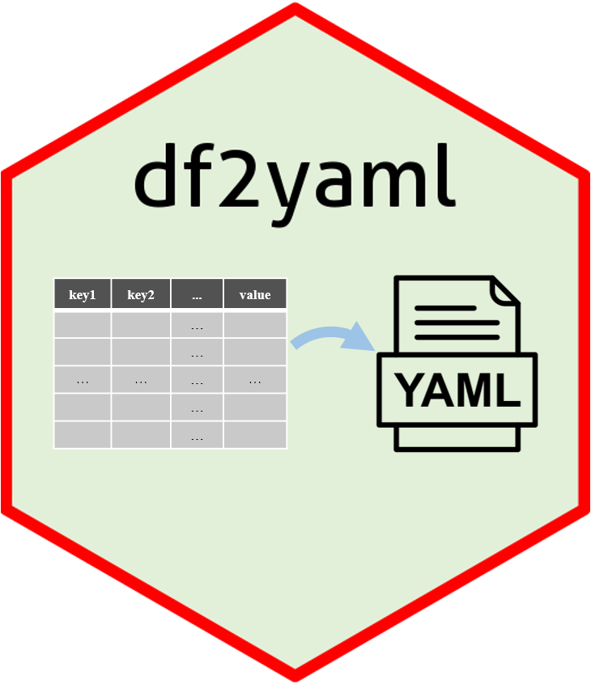

df2yaml.Rmddf2yaml is an R package distributed as part of the CRAN. To install the package, start R and enter:
# install via CRAN
install.package("df2yaml")
# install via Github
# install.package("remotes") #In case you have not installed it.
remotes::install_github("showteeth/df2yaml")In general, it is recommended to install from Github repository (update more timely).
Once df2yaml is installed, it can be loaded by the following command.
library(df2yaml)
The goal of df2yaml is simplify the process of converting dataframe to YAML. The dataframe with multiple key columns and one value column (this column can also contain key-value pair(s)) will be converted to multi-level hierarchy.
Load the test data, this test data contains two key columns (paras and subcmd) and one value column, the value column also contains key and value pair(s) separated by “:”.
# library
library(df2yaml)
# load test file
test_file <- system.file("extdata", "df2yaml_l3.txt", package = "df2yaml")
test_data = read.table(file = test_file, header = T, sep = "\t")
head(test_data)
#> paras subcmd values
#> 1 picard insert_size MINIMUM_PCT: 0.5
#> 2 picard markdup CREATE_INDEX: true; VALIDATION_STRINGENCY: SILENT
#> 3 preseq -r 100 -seg_len 100000000
#> 4 qualimap --java-mem-size=20G -outformat HTML
#> 5 rseqc mapq: 30; percentile-floor: 5; percentile-step: 5
# output yaml string
yaml_res = df2yaml(df = test_data, key_col = c("paras", "subcmd"), val_col = "values")
cat(yaml_res)
#> preseq: -r 100 -seg_len 100000000
#> qualimap: --java-mem-size=20G -outformat HTML
#> rseqc:
#> mapq: 30
#> percentile-floor: 5
#> percentile-step: 5
#> picard:
#> insert_size:
#> MINIMUM_PCT: 0.5
#> markdup:
#> CREATE_INDEX: true
#> VALIDATION_STRINGENCY: SILENTConvert above dataframe to YAML:
yaml_res = df2yaml(df = test_data, key_col = c("paras", "subcmd"), val_col = "values")
cat(yaml_res)
#> preseq: -r 100 -seg_len 100000000
#> qualimap: --java-mem-size=20G -outformat HTML
#> rseqc:
#> mapq: 30
#> percentile-floor: 5
#> percentile-step: 5
#> picard:
#> insert_size:
#> MINIMUM_PCT: 0.5
#> markdup:
#> CREATE_INDEX: true
#> VALIDATION_STRINGENCY: SILENTThere is no limit to the number of key columns used to convert.
sessionInfo()
#> R version 4.0.3 (2020-10-10)
#> Platform: x86_64-conda-linux-gnu (64-bit)
#> Running under: CentOS Linux 7 (Core)
#>
#> Matrix products: default
#> BLAS/LAPACK: /home/softwares/anaconda3/envs/r4.0/lib/libopenblasp-r0.3.12.so
#>
#> locale:
#> [1] LC_CTYPE=zh_CN.UTF-8 LC_NUMERIC=C
#> [3] LC_TIME=zh_CN.UTF-8 LC_COLLATE=zh_CN.UTF-8
#> [5] LC_MONETARY=zh_CN.UTF-8 LC_MESSAGES=zh_CN.UTF-8
#> [7] LC_PAPER=zh_CN.UTF-8 LC_NAME=C
#> [9] LC_ADDRESS=C LC_TELEPHONE=C
#> [11] LC_MEASUREMENT=zh_CN.UTF-8 LC_IDENTIFICATION=C
#>
#> attached base packages:
#> [1] stats graphics grDevices utils datasets methods base
#>
#> other attached packages:
#> [1] df2yaml_0.2.0
#>
#> loaded via a namespace (and not attached):
#> [1] bslib_0.3.1 compiler_4.0.3 pillar_1.5.1 jquerylib_0.1.3
#> [5] prettydoc_0.4.1 tools_4.0.3 digest_0.6.27 jsonlite_1.7.2
#> [9] evaluate_0.14 memoise_2.0.0 lifecycle_1.0.0 tibble_3.1.0
#> [13] pkgconfig_2.0.3 rlang_1.0.3 DBI_1.1.1 cli_3.3.0
#> [17] rstudioapi_0.13 yaml_2.2.1 pkgdown_1.6.1 xfun_0.30
#> [21] fastmap_1.1.0 stringr_1.4.0 dplyr_1.0.5 knitr_1.37
#> [25] desc_1.3.0 generics_0.1.0 fs_1.5.0 sass_0.4.1
#> [29] vctrs_0.4.1 systemfonts_1.0.1 tidyselect_1.1.0 rprojroot_2.0.2
#> [33] glue_1.6.2 R6_2.5.0 textshaping_0.1.2 rrapply_1.2.6
#> [37] fansi_0.4.2 rmarkdown_2.14 purrr_0.3.4 magrittr_2.0.1
#> [41] htmltools_0.5.2 ellipsis_0.3.2 assertthat_0.2.1 ragg_0.4.0
#> [45] utf8_1.2.1 stringi_1.5.3 cachem_1.0.4 crayon_1.4.1